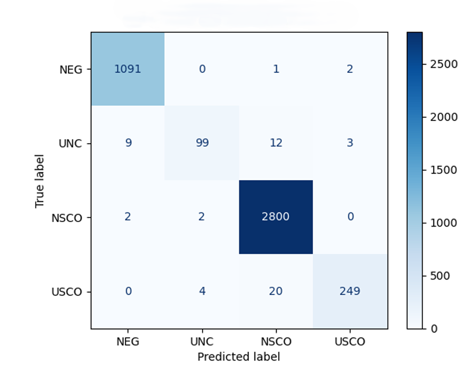
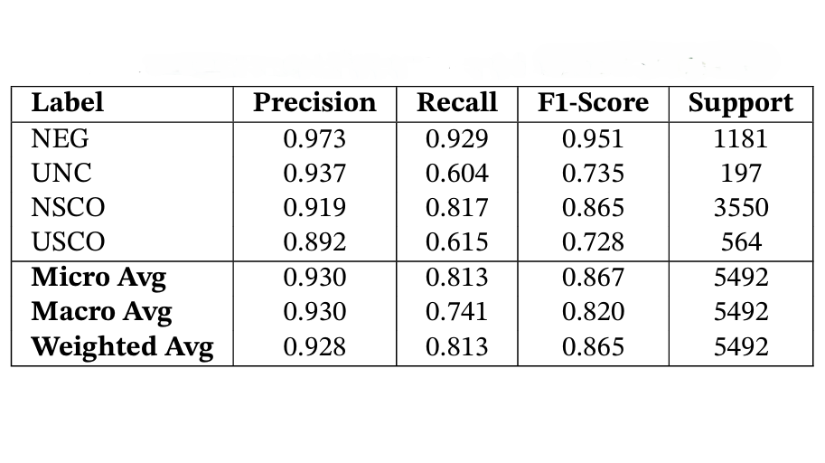

ML for Uncertainty & Negation Detection in Clinical Text (CRF Model)
- Tech Stack: Python, scikit-learn, CRFsuite/sklearn-crfsuite, Pandas, spaCy
- Domain: Catalan & Spanish electronic health records (clinical notes)
Built a sequence-labelling pipeline to detect negation and uncertainty cues (NEG, UNC) and their scopes (NSCO, USCO) in real clinical notes, enabling more reliable extraction of patient conditions from unstructured text.
I implemented the end‑to‑end CRF approach: aligning annotations to tokens, engineering lexical and contextual features (token form, casing, digits, previous/next token, sentence boundaries), and training Conditional Random Fields with different optimizers.

Example clinical sentences with detected cues and scopes (NEG, UNC, NSCO, USCO)

CRF confusion matrix

CRF evaluation
Impact & Results
- Designed tagging pipeline that maps character‑offset annotations to token‑level BIO labels for CRF training.
- Engineered features combining lexical, orthographic and local context for each token.
- Best CRF (L‑BFGS) reached F1‑scores of 0.95 (NEG), 0.86 (NSCO), 0.73 (UNC) and 0.72 (USCO), with overall micro F1 ≈ 0.87.
- Outperformed rule‑based baselines and provided a strong ML reference for later HMM and transformer experiments.